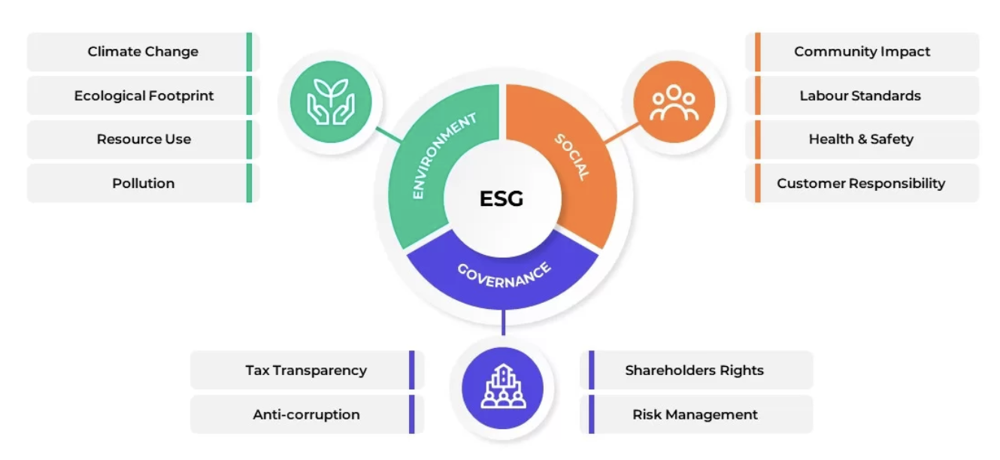
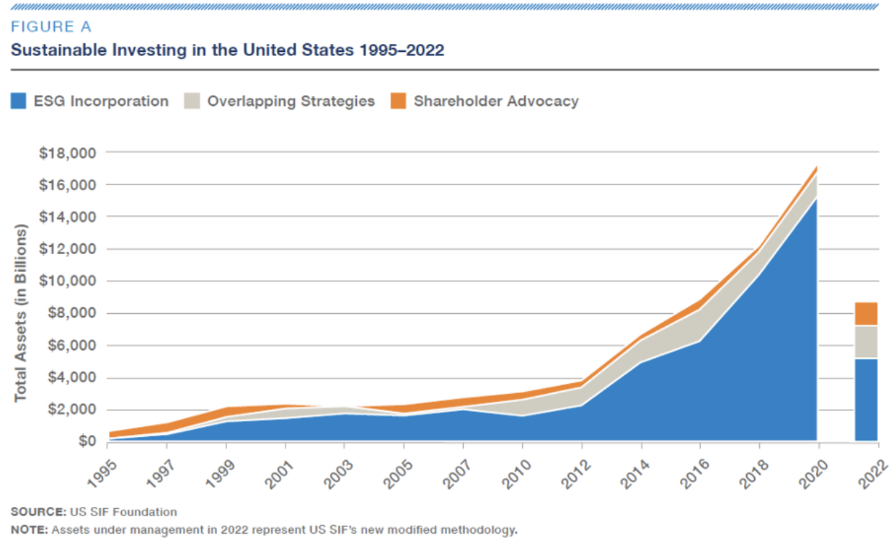
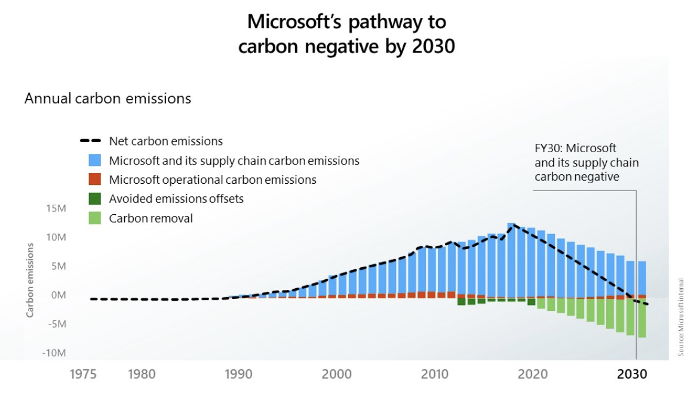

In recent years, Environmental, Social, and Governance (ESG) principles have transformed the way companies operate and investors allocate their resources. ESG goes beyond profitability, encouraging businesses to consider their environmental impact, social responsibilities, and governance practices. But why should investors care? Because ESG offers a roadmap for identifying companies that balance financial success with ethical responsibility, which is increasingly valuable in today’s socially-conscious world.
This blog dives into the fundamentals of ESG, its real-world relevance, and why investors—especially beginners, should pay attention to this evolving trend.
Understanding ESG: A Closer Look
At its core, ESG evaluates companies on their environmental stewardship, social contributions, and corporate governance. These three pillars help investors assess the sustainability and ethical standards of their portfolios. Environmental factors focus on issues like carbon emissions, renewable energy adoption, and resource efficiency. Tesla is a prime example, revolutionizing the automotive industry with electric vehicles and renewable energy innovations. On the social front, companies like Starbucks stand out by fostering inclusive workplaces and committing to ethical sourcing. Meanwhile, governance evaluates leadership structures, transparency, and accountability—areas where Unilever excels by integrating sustainability into its corporate strategy.
Source: Slide Bazaar
Mitigating Risks
Investing is not just about maximizing returns but also about managing risks. Companies with poor ESG practices expose themselves to significant financial and reputational dangers. A prime example is Volkswagen’s 2015 emissions scandal, where the company was caught falsifying emissions data for its diesel vehicles. The fallout led to billions in fines, lawsuits, and damage to its brand image, with lingering consequences for years.
By focusing on ESG criteria, investors can avoid such risks by identifying companies that prioritize regulatory compliance, environmental accountability, and ethical business practices. Apple, for instance, has been a leader in sustainability by committing to 100% renewable energy for its global facilities and consistently upholding strong governance policies to ensure accountability.
Driving Long-Term Performance
Investors increasingly recognize ESG as a driver of sustainable growth. Companies that integrate ESG into their strategies often outperform their peers, particularly during market downturns. According to a 2020 MSCI study, ESG-focused portfolios demonstrated greater resilience and better risk-adjusted returns compared to traditional investments.
Take Amazon as an example. While known for its e-commerce dominance, Amazon has made significant strides in sustainability with its Climate Pledge, committing to achieving net-zero carbon emissions by 2040. This proactive approach not only reduces future regulatory risks but also positions the company as a leader in green logistics and renewable energy investments.
Source: Sustainalytics
ESG Meets Growing Market Demand
It’s important for companies to keep up with incoming trends that align with investors’ morals. Younger generations are shaping the future of investing, with millennials and Gen Z prioritizing ethical and sustainable investment options. This demand is pushing companies to adopt ESG principles to remain relevant and competitive. A company like Coca-Cola, which has faced criticism for its environmental practices in the past, is now investing heavily in water stewardship and waste management, aiming to make all of its packaging recyclable by 2030.
Similarly, Microsoft’s ambitious goal to be carbon negative by 2030 sets a gold standard for environmental responsibility. These initiatives not only appeal to socially-conscious investors but also boost brand loyalty, creating a competitive edge in today’s market.
Source: Microsoft Internal
Why ESG Matters for Student Investors
For students and new investors, ESG represents more than just an investment strategy—it’s a gateway to aligning personal values with financial goals. Investing in companies with strong ESG practices allows us students to contribute to meaningful change in areas like climate action, labor equality, and corporate ethics, while also capitalizing on long-term growth opportunities. For example, renewable energy firms like NextEra Energy are transforming the energy sector with their commitment to clean energy. By investing in companies like these, students can directly support the transition to a more sustainable energy future while tapping into one of the fastest-growing and most innovative industries in the world. This dual impact—financial return and social contribution—is what makes ESG uniquely compelling for new investors.
Understanding ESG as a Learning Tool
For many students, ESG is an entry point into the broader world of investing. Unlike traditional investment approaches that focus solely on financial metrics, ESG encourages a deeper dive into a company’s impact on the environment, society, and governance. This focus expands students' analytical abilities, helping them ask critical questions like: How do a company’s sustainability practices affect its profitability? What societal risks or opportunities does the business address? How does governance influence long-term stability?
By analyzing these factors, students gain insights into how global challenges, such as climate change, labor inequality, or technological disruption—affect financial markets. ESG investing thus becomes a dual-purpose tool: fostering financial literacy while offering a real-world perspective on critical global issues.
Engaging with Innovative Industries
ESG investing often steers attention toward cutting-edge industries and disruptive technologies. For example, sectors like renewable energy, electric vehicles, and ethical technology are thriving because of their focus on sustainable growth. These areas offer students a glimpse into transformative businesses that are shaping the future economy. Take the example of electric vehicles (EVs): Companies like Rivian and Tesla are leading the charge in reducing transportation-related emissions. Investing in ESG doesn’t just support ethical companies; it also opens doors to learning about high-growth industries that are revolutionizing the world.
Developing Ethical Decision-Making Skills
The process of selecting ESG investments builds more than financial acumen—it sharpens ethical reasoning. Students are often faced with questions like: Is this company truly committed to sustainability, or is it engaging in greenwashing? Does the business model address long-term societal needs or exploit short-term gains? How can I balance financial returns with my desire to make a difference? Through ESG, young investors learn to critically evaluate trade-offs between profit, ethics, and impact. This experience nurtures decision-making skills that extend beyond investing, equipping students for leadership roles in their careers and communities.
Unlocking Career Opportunities
Incorporating ESG into investment decisions not only makes students smarter investors but also positions them as attractive candidates in competitive job markets. Knowledge of ESG principles has become a highly sought-after skill across industries, particularly in fields like investment banking, asset management, consulting, and corporate strategy. Firms such as BlackRock, Goldman Sachs, and McKinsey & Company have embedded ESG strategies into their core operations, actively seeking professionals who can analyze and implement sustainable business solutions. For example, BlackRock, the world’s largest asset manager, has prioritized ESG by advocating for corporate transparency on climate-related risks. Similarly, Goldman Sachs has committed $750 billion to sustainable financing, showcasing the growing importance of ESG expertise in high-level finance roles. McKinsey advises global businesses on integrating ESG into their strategic frameworks, creating demand for consultants who understand both financial performance and ethical governance.
Shaping Professional Growth
As the importance of ESG continues to grow, it has reshaped the hiring landscape, with companies actively seeking individuals who can merge sustainability and profitability into actionable strategies. For a university student, this shift presents an exciting opportunity to stand out in competitive fields like consulting, finance, and corporate strategy. Roles such as ESG analysts, sustainability consultants, and corporate social responsibility (CSR) managers are not only growing in demand but also reflect the increasing integration of ESG principles into the core operations of leading companies.
Moreover, internships and leadership programs at ESG-focused organizations in Toronto, whether at multinational firms like BlackRock or local innovators championing green tech—provide practical experience addressing real-world challenges. From assessing the environmental impact of business models to devising innovative green financing solutions, such experiences help students develop a holistic understanding of sustainability.
Beyond building technical expertise, engaging with ESG at this level equips students with the skills to influence corporate policies, foster sustainable innovation, and lead initiatives that blend ethical practices with economic success. Positioned at the forefront of this growing field, students who embrace ESG are not only preparing themselves for impactful careers but also contributing to shaping a future where financial goals and social responsibility are inherently aligned—making them invaluable assets to industries navigating a rapidly changing global landscape.
Glossary of Financial Terms
ESG (Environmental, Social, and Governance): A framework used to evaluate a company’s commitment to sustainability, ethical practices, and corporate governance.
Net-Zero Carbon Emissions: Achieving a balance between carbon emitted and removed from the atmosphere.
Greenwashing: Misleading claims by companies about their environmental practices to appear more sustainable than they are.
Risk-Adjusted Returns: A measure of financial performance that accounts for the risk taken to achieve those returns.
Green Financing: Investments that promote environmental sustainability and combat climate change.
Corporate Social Responsibility (CSR): A company’s efforts to positively impact society through ethical, environmental, and governance initiatives.
Social Equity: Ensuring fairness in opportunities and resources for all, addressing disparities in society.
Published by: Richard Xu